Texas Hill Country Travel Guide
Geographic region of Central and South Texas, considered the border between the American Southeast and Southwest and is notable for its karst topography and tall rugged hills of limestone or granite
Places to See in Texas Hill Country
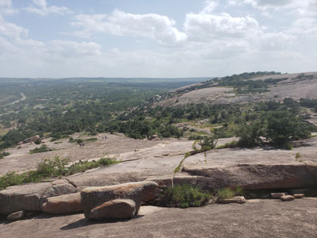
Jeff P from Berkeley, CA, USA, CC BY 2.0, via Wikimedia Commons; Image Size Adjusted
.jpg){kind=link}
Enchanted Rock State Natural Area
Largest pink granite monadnock in the United States covers roughly 640 acres (260 ha) and rises around 425 feet (130 m) above the surrounding terrain to an elevation of 1,825 feet (556 m) above sea level
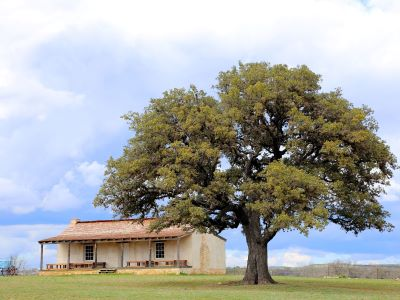
Jeff P from Berkeley, CA, USA, CC BY 2.0, via Wikimedia Commons; Image Size Adjusted
Fort Martin Scott State Historic Site
Military post established in 1848 as the region's first frontier fort built to protect settlers from Native American raids, featuring a reconstructed stone guardhouse and interpretive buildings that bring the antebellum frontier to life.
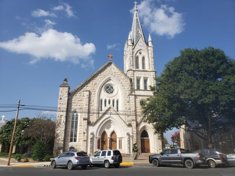
Jeff P from Berkeley, CA, USA, CC BY 2.0, via Wikimedia Commons; Image Size Adjusted
Fredericksburg
German inspired Texas town with Fredericksburg Historic District added to the National Register of Historic Places in Texas
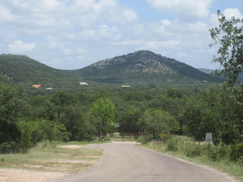
Jeff P from Berkeley, CA, USA, CC BY 2.0, via Wikimedia Commons; Image Size Adjusted
Garner State Park
State park situated along the Frio River offering camping, swimming, tubing, canoeing, kayaking, and hiking amid limestone bluffs and clear cypress-shaded waters.
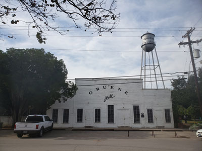
Jeff P from Berkeley, CA, USA, CC BY 2.0, via Wikimedia Commons; Image Size Adjusted
Gruene
Historic district centered on Texas's oldest continually operating dance hall, set along the Guadalupe River within New Braunfels.
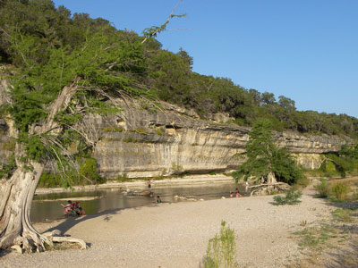
Jeff P from Berkeley, CA, USA, CC BY 2.0, via Wikimedia Commons; Image Size Adjusted
Guadalupe River State Park
Texas state park located on a section of the Guadalupe River with four miles of river frontage for canoeing, fishing, swimming and tubing
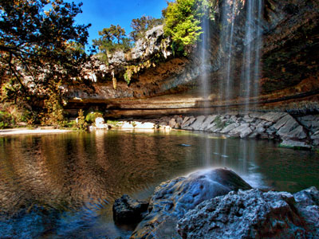
Jeff P from Berkeley, CA, USA, CC BY 2.0, via Wikimedia Commons; Image Size Adjusted
Hamilton Pool Preserve
Natural pool that was created when the dome of an underground river collapsed due to massive erosion thousands of years ago. Habitat featuring a jade green pool into which a 50-foot (15 m) waterfall flows with water temperatures reaching 50 degrees Fahrenheit

Jeff P from Berkeley, CA, USA, CC BY 2.0, via Wikimedia Commons; Image Size Adjusted
Jacobs Well
Popular local swimming spot where from the opening in the creek bed, Jacob's Well cave descends vertically for about 30 feet (9.1 m), then continues downward finally reaching an average depth of 120 feet (37 m)
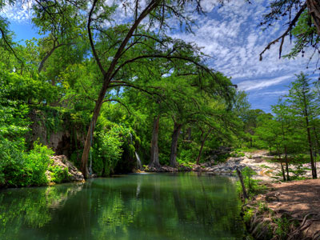
Jeff P from Berkeley, CA, USA, CC BY 2.0, via Wikimedia Commons; Image Size Adjusted
Krause Springs
115-acre (0.47 km2) property has 32 springs, and several feed the man-made pool and the natural pool which flow into Lake Travis
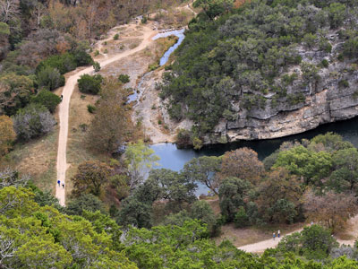
Jeff P from Berkeley, CA, USA, CC BY 2.0, via Wikimedia Commons; Image Size Adjusted
Lost Maples State Natural Area
Large, pristine area of beautiful hills and canyons on the upper Sabinal River in the Edwards Plateau Region of Texas
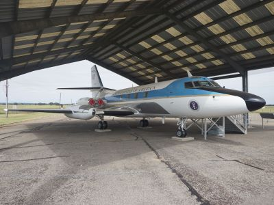
Jeff P from Berkeley, CA, USA, CC BY 2.0, via Wikimedia Commons; Image Size Adjusted
Lyndon B. Johnson National Historical Park
National park preserving the full life story of America's 36th president, spanning two Texas Hill Country districts from his boyhood home to his final resting place at the family ranch.
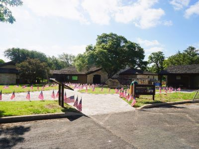
Jeff P from Berkeley, CA, USA, CC BY 2.0, via Wikimedia Commons; Image Size Adjusted
Lyndon B. Johnson State Park and Historic Site
Texas State Park adjacent to the LBJ Ranch featuring a living history farm, American bison, nature trails, and the visitor gateway for the LBJ National Historical Park.
Jeff P from Berkeley, CA, USA, CC BY 2.0, via Wikimedia Commons; Image Size Adjusted
National Museum of the Pacific War
World-class museum dedicated to the American experience in the Pacific Theater of World War II, built in the birthplace of Fleet Admiral Chester W. Nimitz.
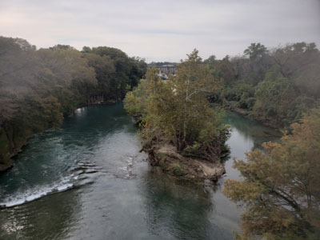
Jeff P from Berkeley, CA, USA, CC BY 2.0, via Wikimedia Commons; Image Size Adjusted
New Braunfels
City known for its German Texan heritage and situated along the Balcones Fault, where the Texas Hill Country meets rolling prairie land
Jeff P from Berkeley, CA, USA, CC BY 2.0, via Wikimedia Commons; Image Size Adjusted
Pace Bend Park
Travis County park on a limestone peninsula jutting into Lake Travis, offering camping, swimming, cliff jumping, kayaking, and miles of rugged hiking trails with sweeping lake views.

Jeff P from Berkeley, CA, USA, CC BY 2.0, via Wikimedia Commons; Image Size Adjusted
Pedernales State Park
5,212-acre state park situated along the banks of the Pedernales River in Blanco County, Texas
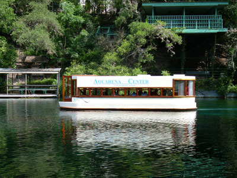
Jeff P from Berkeley, CA, USA, CC BY 2.0, via Wikimedia Commons; Image Size Adjusted
San Marcos
Founded on the banks of the San Marcos River, the area is thought to be among the oldest continuously inhabited sites in the Americas
Overview
The Texas Hill Country is a rugged, spring-fed region of Central Texas that forms the southeastern edge of the Edwards Plateau, roughly bounded by San Antonio and Austin to the east and stretching west into open ranch country. Its limestone and granite hills, cold spring-fed rivers, and small German- and Czech-founded towns give it a character distinct from the flatter country around it.
It is part outdoor destination, part wine and dance-hall country, and a favorite weekend escape from both Austin and San Antonio. The biggest draws are tubing and swimming in cold, clear rivers, hiking granite domes and limestone canyons, wineries and peach stands, and wandering small towns built around historic town squares.
Geography
The Hill Country’s landscape comes from karst topography, a thin layer of soil over limestone and granite that has eroded into steep hills, canyons, and hundreds of caves. Many hills rise 400 to 500 feet above the surrounding plains, and Enchanted Rock, the second-largest granite dome in the United States, anchors the Llano Uplift in the region’s western half. The porous ground feeds the Guadalupe, Frio, Medina, San Marcos, and Pedernales rivers, and towns such as Austin, San Marcos, and New Braunfels grew up where springs surface along the Balcones Escarpment. Show caves such as Natural Bridge Caverns, Longhorn Cavern State Park, and Cascade Caverns are open to the public, and the thin soil leaves the region prone to sudden flash floods.
History
The Tonkawa, Lipan Apache, and Comanche peoples lived in and traveled through the Hill Country, and Spanish missions and presidios, such as Mission San Saba in 1757, tried to establish a presence. German immigrants arrived in the 1840s, with New Braunfels founded in 1845 and Fredericksburg in 1846, and Czech and Polish settlers followed. The 1847 Meusebach–Comanche Treaty brought peace to the German settlements, and ranching, farming, and later tourism shaped the area. President Lyndon B. Johnson was born near Stonewall in 1908, and his ranch became known as the “Texas White House.”
Cities and Towns
Fredericksburg is known for its German heritage, shops along Main Street, and nearby wineries and peach orchards. New Braunfels offers tubing on the Comal and Guadalupe rivers, the historic dance hall at Gruene, and Wurstfest, while San Marcos is a university town with a spring-fed river. Other popular towns include Wimberley, Boerne, Kerrville, Bandera (the “Cowboy Capital of the World”), Johnson City, and Dripping Springs.
National Protected Areas
Lyndon B. Johnson National Historical Park includes Johnson’s boyhood home in Johnson City and the LBJ Ranch near Stonewall. San Antonio Missions National Historical Park, a UNESCO World Heritage Site, protects four Spanish colonial missions at the Hill Country’s southeastern edge. The Hill Country has no national parks, though the nearby Guadalupe Mountains and Big Bend are farther west.
State Parks and Historic Sites
Enchanted Rock State Natural Area is the region’s signature granite dome, and Pedernales Falls State Park has limestone cascades and swimming. Garner State Park on the Frio River is a classic summer destination, Guadalupe River State Park offers river access near Spring Branch, and Lost Maples State Natural Area is known for fall color. Hill Country State Natural Area, Longhorn Cavern State Park, and Lyndon B. Johnson State Park and Historic Site round out the options.
Seasons and Best Time to Visit
Spring is famous for wildflowers, especially Texas bluebonnets in late March and April. Summer is hot, with temperatures often above 95°F, and is the peak season for river tubing and swimming, with peach season from May through August. Fall brings Oktoberfest in Fredericksburg, Wurstfest in New Braunfels, and foliage at Lost Maples in November. Winter is mild, with holiday lights in Fredericksburg and Johnson City, though flash flooding can happen at any time of year, including the deadly July 2025 flood on the Guadalupe River.
This article is based on publicly available information about the Texas Hill Country, as well as material from the Wikipedia article "Texas Hill Country", used under the Creative Commons Attribution-Share-Alike License 3.0. Additional information is from the National Park Service pages for Lyndon B. Johnson National Historical Park and San Antonio Missions National Historical Park, Texas Parks and Wildlife, and the Fredericksburg Convention and Visitor Bureau.